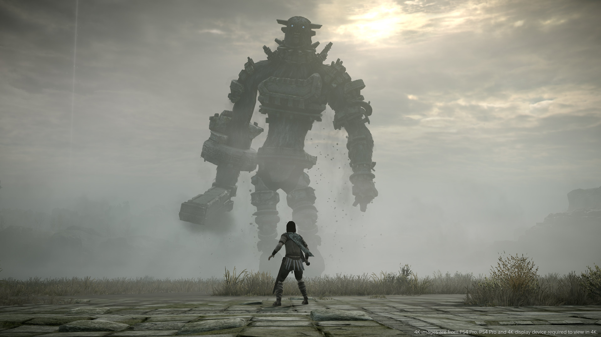
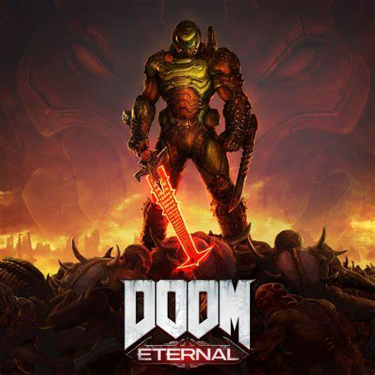
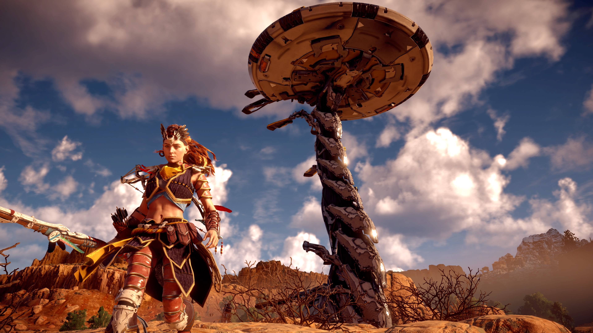

videojuegos populares
shadow of the colosus
precio:30$
En Shadow of the Colossus, encarnas a un guerrero que cabalga hacia un templo llevando en la grupa de su caballo el cadáver de su amada. En el templo, un misterioso ser promete devolverla a la vida si matas a 16 colosos, auténticos gigantes de una belleza sobrecogedora que con su muerte ayudarás a extinguir. Es un juego de acción y aventuras en tercera persona en el que exploramos un mundo abierto en búsqueda de una serie de colosos.
fornite

precio:gratis$
Fortnite es un battle royale para Android en el que hasta 100 jugadores se lanzan en paracaídas en una isla desierta para armarse, luchar unos contra otros y probar que tienen las habilidades necesarias para ser el último superviviente. Es un videojuego del año 2017 desarrollado por la empresa Epic Games, lanzado como diferentes paquetes de software que presentan diferentes modos de juego, pero comparten el mismo motor de juego y mecánicas.
DOOM eternal
precio:35$
Doom Eternal es un videojuego de acción y disparos en primera persona. Fue desarrollado por id Software y publicado por Bethesda Softworks. Es el quinto título principal de la serie Doom y la secuela directa del juego estrenado en 2016. El juego fue lanzado el 20 de marzo de 2020 para las plataformas PlayStation 4, Xbox One, Microsoft Windows, Stadia y Nintendo Switch, además de versiones planeadas para PlayStation 5 y Xbox Series X.
Horizon Zero Dawn
precio:45$
Horizon Zero Dawn es un videojuego de rol de acción de mundo abierto desarrollado por Guerrilla Games y publicado por Sony Computer Entertainment para PlayStation 4 en 2017. Se reveló oficialmente en el E3 2015 durante la conferencia de prensa de Sony y es la primera propiedad intelectual creada por Guerrilla Games desde Killzone en 2004, así como la primera incursión del desarrollador en el género de los juegos de rol. lanzado en 2020.
God of war

precio:50$
God of War es un videojuego de acción-aventura hack and slash en tercera persona desarrollado por Santa Monica Studio y publicado por Sony Interactive Entertainment para la PlayStation 4. Es la octava entrega de la serie God of War, la octava cronológicamente y la secuela de God of War III de 2010. Por primera vez en la serie, hay dos protagonistas: Kratos, el antiguo Dios griego de la Guerra que sigue siendo el único personaje jugable, y su hijo pequeño,